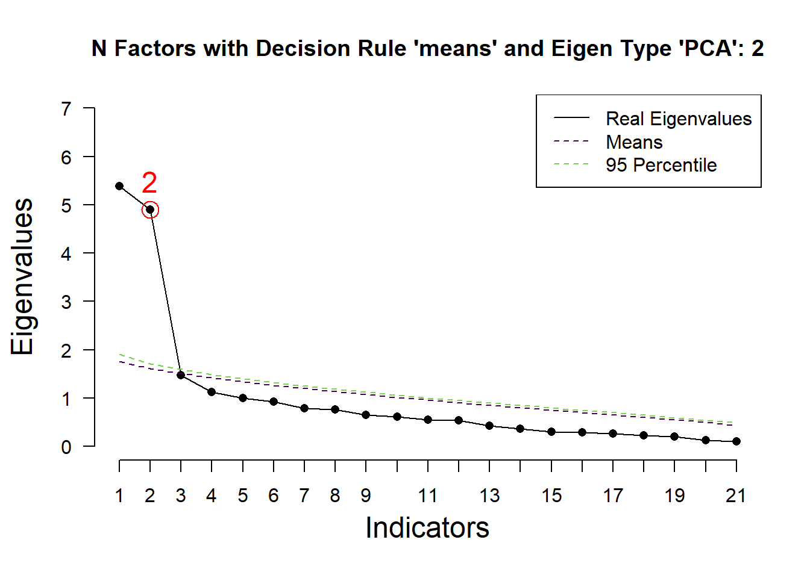
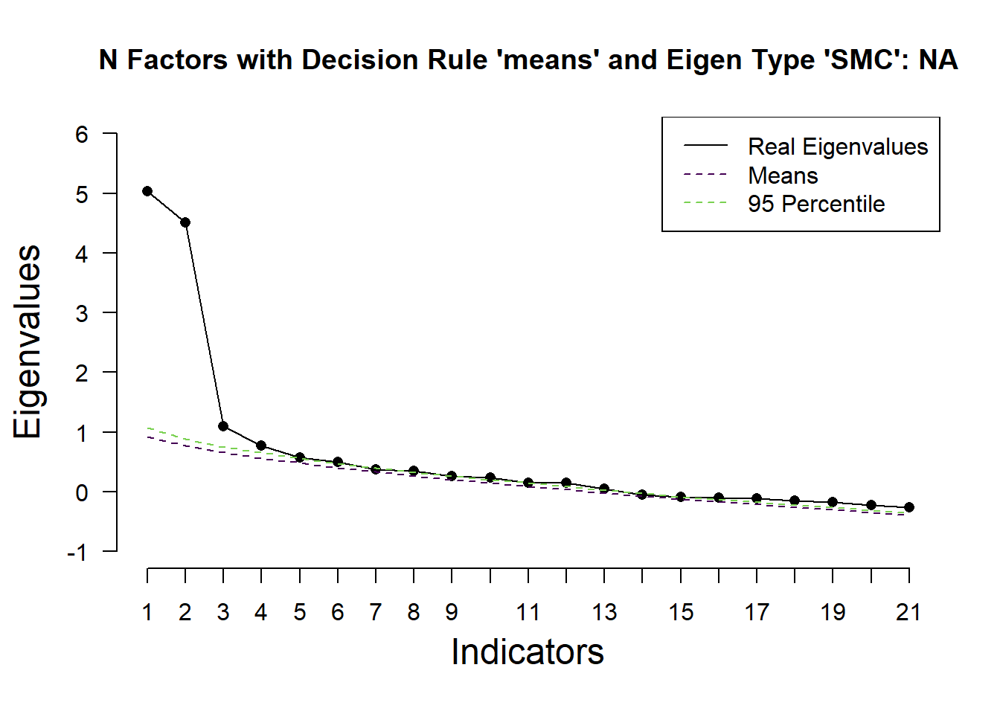
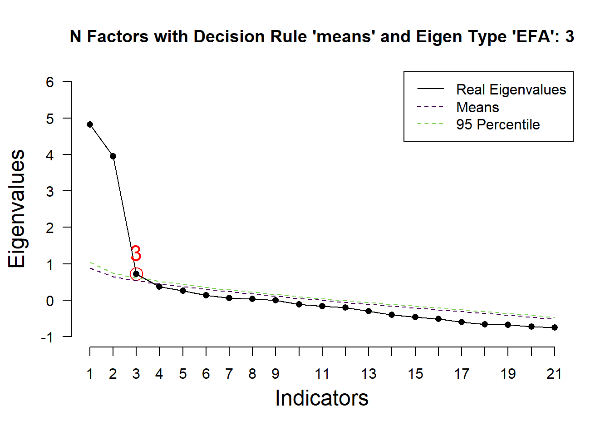
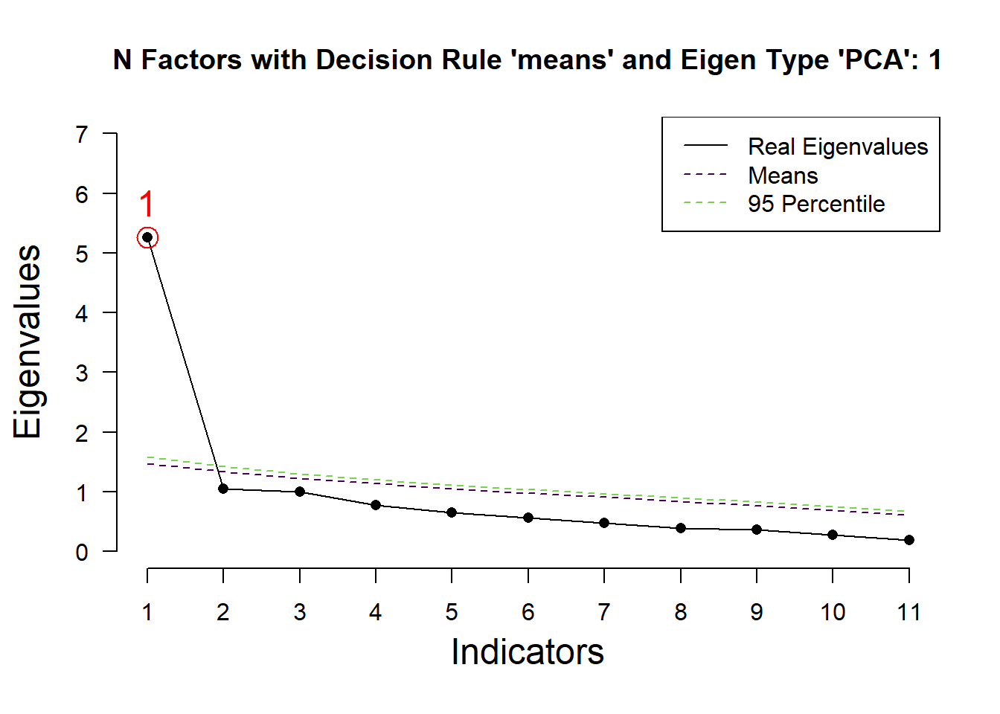
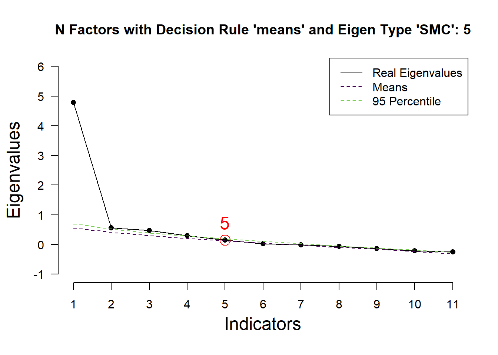
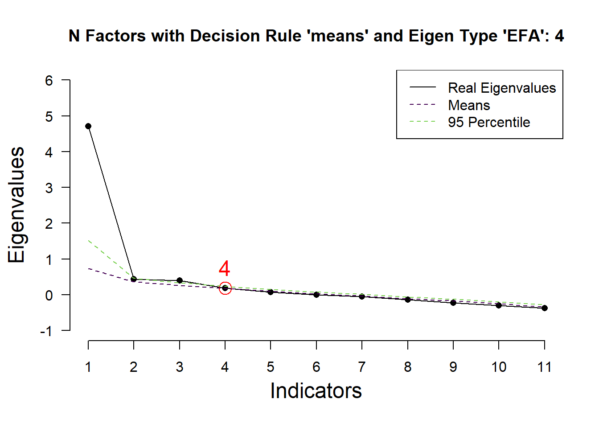
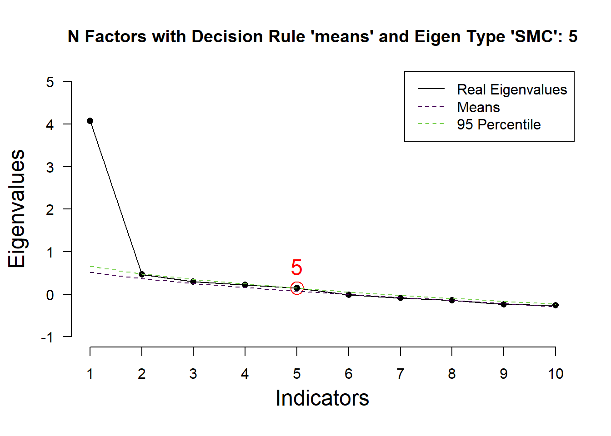
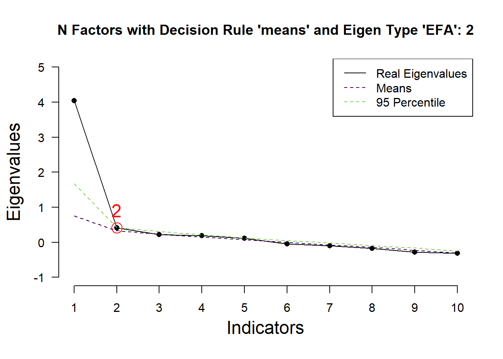

library(psych) # Para EFA con fa()
library(EFAtools) # Para Análisis Paralelo
library(dplyr) # Para manipulación de datos con %>%Análisis Factorial Exploratorio: Escalas de Perspectiva Ambiental
Introducción
Este documento detalla el proceso de Análisis Factorial Exploratorio (AFE) para validar un instrumento diseñado para medir las perspectivas biocéntrica y antropocéntrica. El objetivo es explorar la estructura subyacente del instrumento, depurar las escalas y confirmar su unidimensionalidad.
Paso 0: Cargar Librerías
Primero, cargamos todos los paquetes de R que necesitaremos para el análisis. psych es para el análisis factorial, EFAtools para el análisis paralelo, y dplyr para la manipulación de datos.
Parte 1: Análisis del Instrumento Global
El primer gran paso es analizar todos los ítems juntos para probar la hipótesis principal: que el instrumento mide dos grandes factores (Biocentrismo y Antropocentrismo).
Paso 1.1: Preparación de Datos
Cargamos la base de datos final desde el archivo bdNat.Rdata. Luego, la depuramos, eliminando los ítems que en análisis preliminares demostraron ser problemáticos y las columnas que no son ítems de la escala Likert.
# Cargamos el objeto 'bd' directamente desde el archivo .Rdata
# Asegúrate de que el archivo "bdNat.Rdata" esté en el mismo directorio de trabajo.
setwd("D:/IntellijIDEA_Projects/artcls2025/natSujDer")
load("bdNat.Rdata")
# Creamos el dataframe para el análisis (dbEfa)
# 1. Tomamos la base original (`bd`)
# 2. Eliminamos los ítems problemáticos identificados previamente.
# 3. Eliminamos columnas de identificación o demográficas.
dbEfa <- bd %>%
select(-c(q1_bf_ant, q3_al_ant, q15_al_ant, q17_td_ant, q25_al_bio, q28_rep_bio, q16_bf_bio)) %>%
select(-(id:Condition))
# Vemos las dimensiones del dataframe limpio
# dim(dbEfa)Paso 1.2: Decidir el Número de Factores
Antes de correr el AFE, usamos un método empírico para determinar el número óptimo de factores a extraer. El Análisis Paralelo es el método más recomendado. Compara los autovalores de nuestros datos con los de datos aleatorios para sugerir cuántos factores son estadísticamente significativos.
# Ejecutamos el Análisis Paralelo sobre el conjunto completo de ítems.
# Esto nos ayuda a justificar nuestra decisión teórica de 2 factores.
# Damos prioridad al resultado de "PCA-determined eigenvalues".
EFAtools::PARALLEL(dbEfa)ℹ 'x' was not a correlation matrix. Correlations are found from entered raw data.Parallel Analysis performed using 1000 simulated random data sets
Eigenvalues were found using PCA, SMC, and EFA
Decision rule used: means
── Number of factors to retain according to ────────────────────────────────────
◌ PCA-determined eigenvalues: 2
◌ SMC-determined eigenvalues: NA
◌ EFA-determined eigenvalues: 3


Paso 1.3: Ejecutar el AFE Principal (2 Factores)
Con la justificación teórica y empírica, procedemos a ejecutar el AFE principal forzando una solución de 2 factores.
nfactors = 2: Le ordenamos al modelo que busque dos factores.cor = "poly": Usamos correlaciones policóricas, el método correcto para escalas tipo Likert (ordinales).fm = "pa": Usamos “Principal Axis Factoring”, un método de extracción robusto que no asume normalidad.rotate = "oblimin": Usamos una rotación oblicua, que permite que los dos factores estén correlacionados.
# Ejecutamos el modelo.
# Es importante mostrar las advertencias (warnings) aquí,
# ya que nos recuerdan la inestabilidad de la matriz al analizar todos los ítems juntos.
modEfa <- psych::fa(
r = dbEfa,
nfactors = 2,
cor = "poly",
fm = "pa",
rotate = "oblimin"
)Warning in cor.smooth(mat): Matrix was not positive definite, smoothing was
doneLoading required namespace: GPArotation# Imprimimos los resultados.
# cut = 0.4 -> Oculta cargas factoriales bajas para una mejor lectura.
# sort = TRUE -> Ordena los ítems por su carga factorial.
print(modEfa, cut = 0.4, sort = TRUE)Factor Analysis using method = pa
Call: psych::fa(r = dbEfa, nfactors = 2, rotate = "oblimin", fm = "pa",
cor = "poly")
Standardized loadings (pattern matrix) based upon correlation matrix
item PA1 PA2 h2 u2 com
q11_td_bio 9 0.86 0.79 0.21 1.1
q14_rep_bio 12 0.82 0.75 0.25 1.1
q21_bf_bio 16 0.77 0.62 0.38 1.2
q6_bf_bio 4 0.74 0.54 0.46 1.0
q13_al_bio 11 0.74 0.55 0.45 1.0
q12_bf_bio 10 0.73 0.59 0.41 1.1
q4_td_bio 2 0.72 0.61 0.39 1.5
q19_td_bio 14 0.71 0.51 0.49 1.0
q10_bf_bio 8 0.66 0.45 0.55 1.1
q9_td_bio 7 0.66 0.45 0.55 1.1
q5_al_bio 3 0.60 0.41 0.59 1.3
q18_rep_ant 13 0.80 0.64 0.36 1.0
q22_bf_ant 17 0.78 0.63 0.37 1.0
q20_bf_ant 15 0.73 0.54 0.46 1.1
q26_td_ant 20 0.67 0.45 0.55 1.0
q7_al_ant 5 0.66 0.45 0.55 1.1
q27_bf_ant 21 0.64 0.40 0.60 1.0
q8_rep_ant 6 0.63 0.44 0.56 1.1
q23_td_ant 18 0.63 0.47 0.53 1.3
q24_td_ant 19 0.62 0.40 0.60 1.0
q2_bf_ant 1 0.55 0.32 0.68 1.1
PA1 PA2
SS loadings 6.05 4.96
Proportion Var 0.29 0.24
Cumulative Var 0.29 0.52
Proportion Explained 0.55 0.45
Cumulative Proportion 0.55 1.00
With factor correlations of
PA1 PA2
PA1 1.00 -0.07
PA2 -0.07 1.00
Mean item complexity = 1.1
Test of the hypothesis that 2 factors are sufficient.
df null model = 210 with the objective function = 41.77 with Chi Square = 5604.06
df of the model are 169 and the objective function was 30.72
The root mean square of the residuals (RMSR) is 0.09
The df corrected root mean square of the residuals is 0.1
The harmonic n.obs is 143 with the empirical chi square 441.51 with prob < 3.1e-26
The total n.obs was 143 with Likelihood Chi Square = 4080.01 with prob < 0
Tucker Lewis Index of factoring reliability = 0.09
RMSEA index = 0.402 and the 90 % confidence intervals are 0.393 0.414
BIC = 3241.29
Fit based upon off diagonal values = 0.95
Measures of factor score adequacy
PA1 PA2
Correlation of (regression) scores with factors 0.99 0.96
Multiple R square of scores with factors 0.98 0.92
Minimum correlation of possible factor scores 0.96 0.84Parte 2: Análisis Jerárquico de las Subescalas
Una vez validada la estructura de dos grandes factores, “hacemos zoom” en cada uno para confirmar su unidimensionalidad.
Paso 2.1: Separar las Subescalas
Creamos dos nuevos dataframes, uno para cada constructo, usando los ítems finales depurados.
# Seleccionamos las columnas que contienen "bio" para la escala Biocéntrica
bio <- dbEfa %>%
select(contains("bio"))
# Seleccionamos las columnas que contienen "ant" para la escala Antropocéntrica
ant <- dbEfa %>%
select(contains("ant"))Paso 2.2: Decidir Factores para Cada Subescala
Repetimos el Análisis Paralelo, esta vez por separado para cada subescala. Esto nos dirá si cada una de ellas es, en efecto, unidimensional.
# Análisis Paralelo para la subescala Biocéntrica
EFAtools::PARALLEL(bio)ℹ 'x' was not a correlation matrix. Correlations are found from entered raw data.Parallel Analysis performed using 1000 simulated random data sets
Eigenvalues were found using PCA, SMC, and EFA
Decision rule used: means
── Number of factors to retain according to ────────────────────────────────────
◌ PCA-determined eigenvalues: 1
◌ SMC-determined eigenvalues: 5
◌ EFA-determined eigenvalues: 4


# Análisis Paralelo para la subescala Antropocéntrica
EFAtools::PARALLEL(ant)ℹ 'x' was not a correlation matrix. Correlations are found from entered raw data.Parallel Analysis performed using 1000 simulated random data sets
Eigenvalues were found using PCA, SMC, and EFA
Decision rule used: means
── Number of factors to retain according to ────────────────────────────────────
◌ PCA-determined eigenvalues: 1
◌ SMC-determined eigenvalues: 5
◌ EFA-determined eigenvalues: 2

Nota: En ambos casos, el método más fiable (PCA-determined) sugiere 1 solo factor, lo que nos da luz verde para probar la unidimensionalidad.
Paso 2.3: Ejecutar los AFE Finales (1 Factor)
Finalmente, corremos un AFE para cada subescala forzando una solución de 1 factor. Esto nos permite ver las cargas factoriales de cada ítem en su constructo y evaluar la coherencia interna de cada escala final.
#| label: efa-final
AFE para la subescala Biocéntrica (confirmando 1 factor)
modelo_bio_final <- fa( r = bio, nfactors = 1, cor = “poly”, fm = “pa” ) print(modelo_bio_final)
AFE para la subescala Antropocéntrica (confirmando 1 factor)
modelo_ant_final <- fa( r = ant, nfactors = 1, cor = “poly”, fm = “pa” ) print(modelo_ant_final)